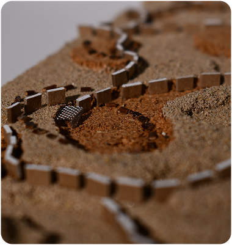
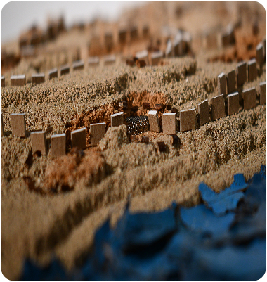
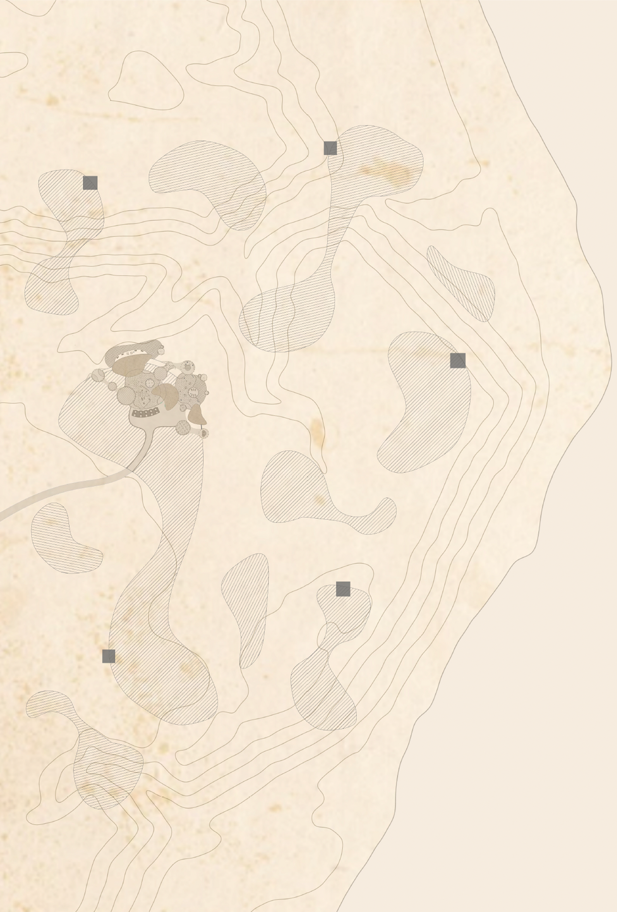

DOCTOR’S PARK
 FOX POINT, WI
FOX POINT, WI
Doctor’s Park is a forested bluff park on Lake Michigan, part of the Milwaukee County Parks system on the border of Fox Point and Bayside. Wooded ravines run down to the shore, and the point of land inside the park gave Fox Point its name. The existing park is open and spacious with the greenery and trees surrounding the area, providing a sense of enclosure.
The park already draws walkers, families and beachgoers, but its activity is concentrated in warm weather. That is the opportunity: a building that gives people a reason to come in every season.

The shoreline at Doctor’s Park
Trail signage at the park entrance

EXISTING SITE CONDITIONS:
THE PROPOSAL

We propose a new loop trail through Doctor’s Park, with LANDFORM as its starting point and five small shelters along the way. Visitors arrive at the building and the parking lot, walk the loop through the woods and out toward Lake Michigan, and return to LANDFORM. The path and shelters give the park new places to stop and stay, and the building gives it a year-round hub.



Close-up of individual shelters
SITE MAP

Learn more about each building below:

LAND-
FORM
The starting point and end of the trail, and the park’s central hub. It’s where you arrive, gather, warm up or cool off, and where the loop returns you. Its sunroofs and sliding glass doors open the spaces to the weather or close them against it, so the building works in every season.
→ See the buildingSHELTER 2:
UNDER THE CANOPY
A resting point among the trees, built for shade and quiet along the upper part of the loop.
SHELTER 1:
INTO THE WOODS
The first stop after leaving LANDFORM, where the park’s open edge gives way to the woods. A place to pause, get your bearings, and take in the start of the trail.
SHELTER 3:
TOWARD THE WATER
A stop with a view of the lake nearby, for catching wind, light and weather coming off Lake Michigan.
SHELTER 4:
AT THE SHORELINE
The stop closest to Lake Michigan, a place to watch the weather and do water-related activities.
SHELTER 5:
THE RETURN
The last small stop before the trail loops back to LANDFORM. A place to rest before the final stretch of the walk.